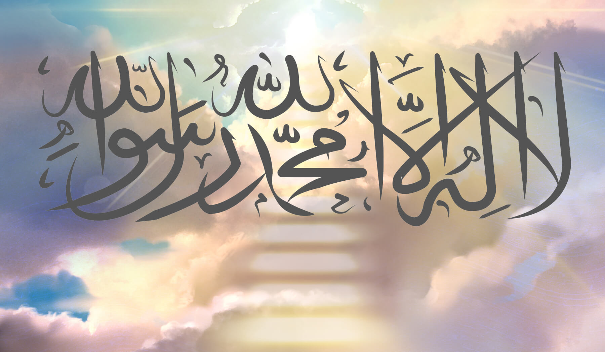
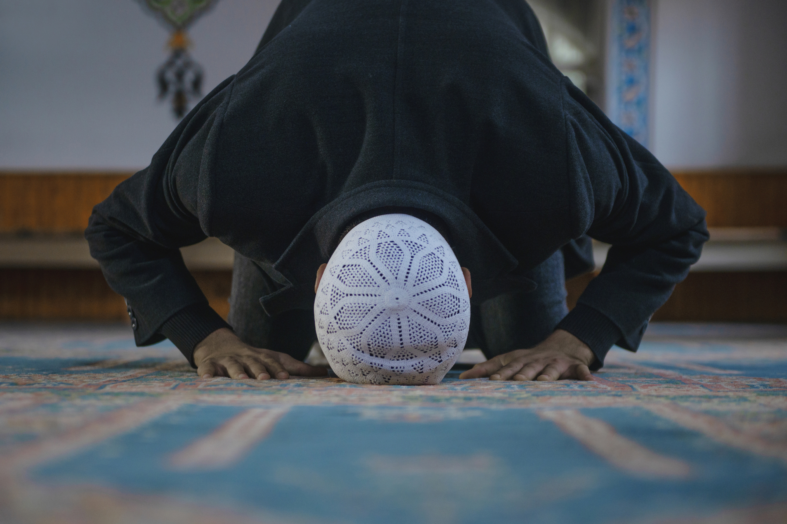
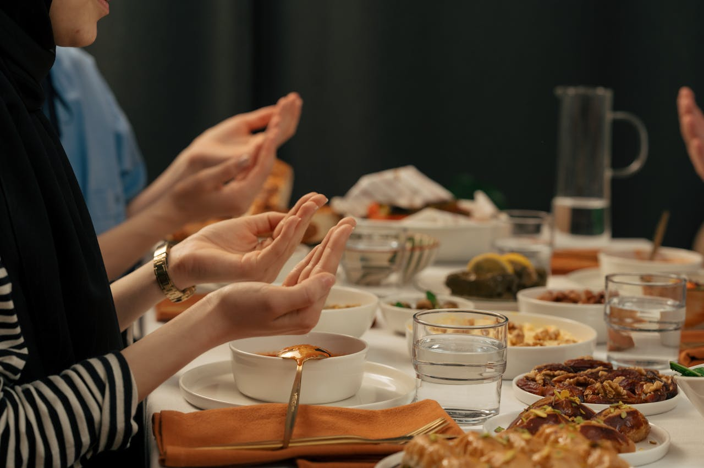
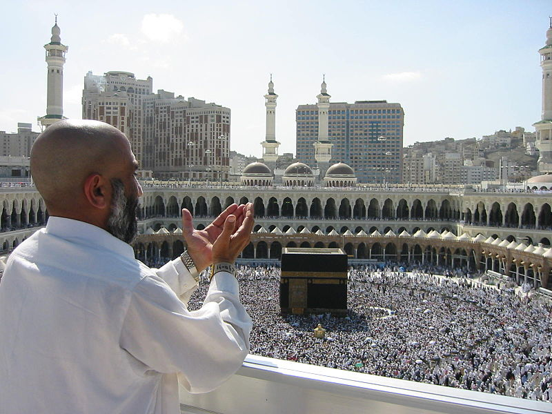

Five Pillars of Islam

Shahada (Testimony of Faith)
The declaration that "There is no god but Allah, and Muhammad ﷺ is His servant and messenger." This testimony is the foundation of Islamic faith and the first step into Islam.

Salah (Prayer)
Five daily prayers performed at specific times, creating a direct connection between the believer and Allah. Prayer provides spiritual guidance, mindfulness, and community.

Zakat (Charity)
Obligatory giving of a portion of one's wealth to help those in need. Zakat purifies wealth and ensures social justice and community support.

Sawm (Fasting)
Fasting during the month of Ramadan from dawn to sunset, abstaining from food, drink, and other physical needs. This practice develops self-discipline and empathy.

Hajj (Pilgrimage)
The pilgrimage to Mecca, required once in a lifetime for those who are physically and financially able. Hajj unites Muslims from around the world in worship.

 Email Address
Email Address Phone Number
Phone Number Location
Location